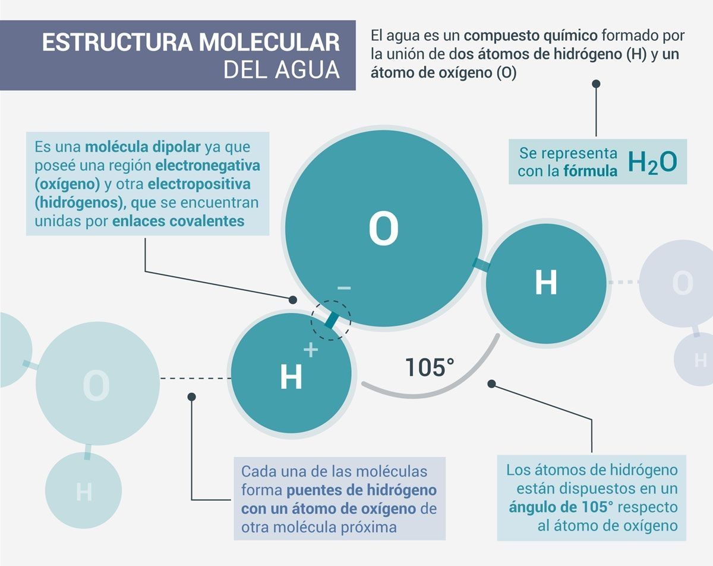
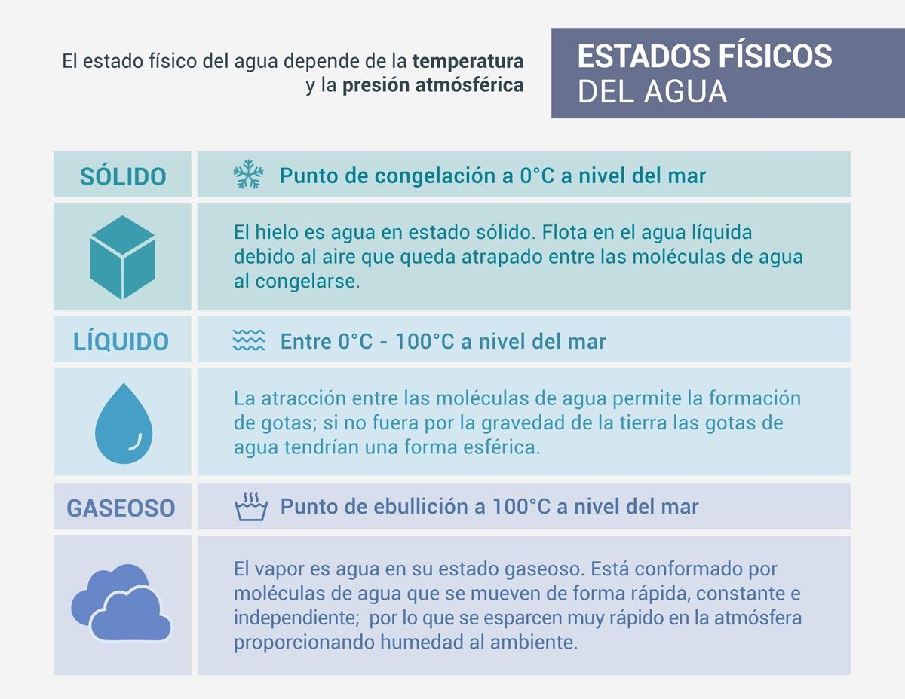

El agua es un elemento de la naturaleza, integrante de los ecosistemas naturales, fundamental para el sostenimiento y la reproducción de la vida en el planeta ya que constituye un factor indispensable para el desarrollo de los procesos biológicos que la hacen posible.
El agua es el componente más abundante en los medios orgánicos, los seres vivos contienen por término medio un 70% de agua. No todos tienen la misma cantidad, los vegetales tienen más agua que los animales y ciertos tejidos (por ejemplo: el tejido graso) contienen menos agua -tiene entre un 10% a un 20% de agua- que otros como, por ejemplo: el nervioso, con un 90% de agua. También varía con la edad, así, los individuos jóvenes tienen más agua que los adultos.

El agua es el fundamento de la vida: un recurso crucial para la humanidad y para el resto de los seres vivos. Todos la necesitamos, y no solo para beber. Nuestros ríos y lagos, nuestras aguas costeras, marítimas y subterráneas, constituyen recursos valiosos que es preciso proteger.
Puesto que los átomos de hidrógeno y oxígeno en la molécula contienen cargas opuestas, moléculas de agua vecinas se atraen entre sí. Esta estructura permite que muchas moléculas iguales se unan con gran facilidad, formando enormes cadenas que constituyen el líquido que da la vida a nuestro planeta.
La composición y estructura molecular del agua son responsables de las propiedades físico-químicas que la distinguen de otras sustancias.
Asimismo, el agua contribuye a la estabilidad del funcionamiento del entorno y de los seres y organismos que en él habitan, es por tanto, un elemento indispensable para la subsistencia de la vida animal y vegetal del planeta. Es decir, que "el agua es un bien de primera necesidad para los seres vivos y un elemento natural imprescindible en la configuración de los sistemas medioambientales". En este aspecto, este líquido vital constituye más del 80% del cuerpo de la mayoría de los organismos e interviene en la mayor parte de los procesos metabólicos que se realizan en los seres vivos; además interviene de manera fundamental en el proceso de fotosíntesis de las plantas y es el hábitat de una gran variedad de seres vivos.
El agua es una sustancia que se encuentra en el ambiente en cualquiera de los tres estados de la materia sólido, líquido y gaseoso.
El agua es el componente más abundante en los medios orgánicos, los seres vivos contienen por término medio un 70% de agua. No todos tienen la misma cantidad, los vegetales tienen más agua que los animales y ciertos tejidos (por ejemplo: el tejido graso) contienen menos agua -tiene entre un 10% a un 20% de agua- que otros como, por ejemplo: el nervioso, con un 90% de agua. También varía con la edad, así, los individuos jóvenes tienen más agua que los adultos.

En su estado sólido, presenta menor densidad que en su fase líquida, forma estructuras ordenadas en las que cada molécula de agua queda establemente unida a otras cuatro moléculas.
En su estado líquido, las moléculas tienen una elevada fuerza de cohesión que las mantiene dinámicamente unidas, consecuencia de la rápida formación y ruptura de los enlaces entre estas moléculas.
Finalmente, en su fase gaseosa, las moléculas se encuentran muy separadas y en desorden.